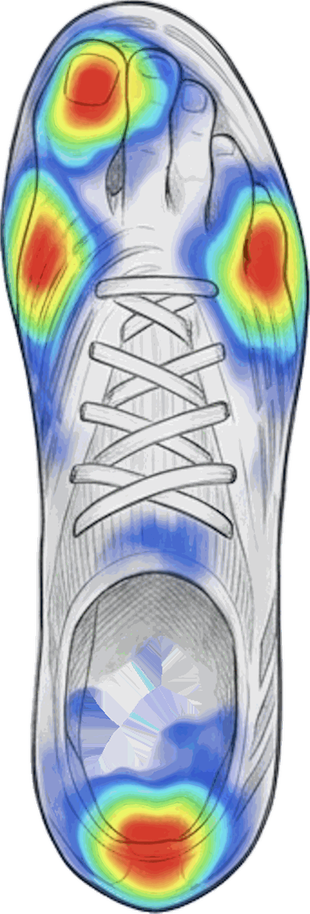
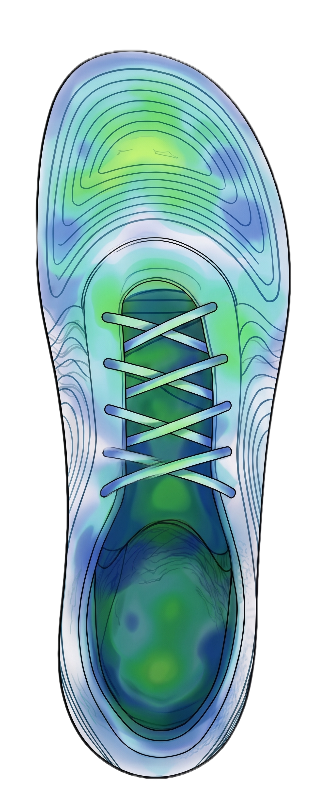

Sinetik:pure entstand aus einer Beobachtung auf dem Platz: Füsse, die sich in zu engen Schuhen verformen, gewählt wegen ihres Aussehens. Ein Fussballschuh mit breitem Vorfuss und dem Halt, den ein Sport mit vielen Richtungswechseln wirklich verlangt. In der Schweiz entworfen, in Portugal gefertigt — der europäische anatomische Fussballschuh.
Du hast schon mal eine halbe Nummer kleiner genommen, «um den Ball besser zu spüren». Du kennst den schwarzen Zehennagel am Saisonende, die Blase am kleinen Zeh, das Brennen unter dem Vorfuss nach einem Spiel auf trockenem Boden. Auf dem Platz sind diese Dinge normal geworden. Das sollten sie nicht sein.
Der Fuss ist nicht nur eine Auftrittsfläche. Er ist ein Wahrnehmungsorgan: Tausende Rezeptoren speisen ständig Gleichgewicht, Belastung und Koordination. Eingesperrt in einen engen, stark umschlossenen Schuh, sendet er nur noch verarmte Informationen. Zu kurzes oder zu enges Schuhwerk wird in der Literatur zudem mit subungualem Hämatom, Zehenfehlstellungen und dem Morton-Neurom in Verbindung gebracht.
Beim jungen Spieler im Wachstum ist das nicht belanglos: Die Form des erwachsenen Fusses entsteht genau dort, zwischen 10 und 18 Jahren, im Schuh, den er fünfmal pro Woche trägt.
Und diese Enge hat keine technische Rechtfertigung. Sie stammt aus einem ästhetischen Erbe und aus dem «Speed»-Marketing — nicht aus biomechanischer Optimierung.
Derselbe Fuss, in zwei verschiedenen Volumen. Links die Geometrie, die der Markt durchgesetzt hat. Rechts die, die wir gezeichnet haben.

Die roten Brennpunkte sind die Stellen, an denen der Vorfuss gegen das Obermaterial drückt: der grosse Zeh, beide Mittelfussköpfchen, der Rand des kleinen Zehs. Sie verursachen den schwarzen Zehennagel und die Blase am Saisonende.

Kein Brennpunkt mehr. Der breite Vorfuss lässt die Zehen sich spreizen, die Last verteilt sich auf die gesamte Auftrittsfläche — und die Ferse bleibt gehalten, denn dort entsteht der Halt, nicht vorne.
Sechs Entscheidungen und der Grund für jede. Keine Technologie, die nur für die Geschichte erfunden wurde.
Die Form folgt der echten Anatomie: Die Zehen behalten den Platz, sich beim Auftreten zu spreizen, wie barfuss.
Hier entsteht der Halt — strukturierte Fersenkappe, zentrale Schnürung. Der Fuss schwimmt nicht über den Stollen. Breit vorne heisst nicht locker.
Pebax schon beim ersten Modell, Steifigkeit zonenweise durchdacht: fest genug, um Energie zu übertragen, geschmeidig genug für das Abrollen des Fusses.
Eine konische Dominanz, darauf ausgelegt, den Fuss drehen zu lassen, statt ihn im Boden zu blockieren. Fester Boden, Naturrasen.
Keine dicke Zwischensohle. Der Komfort kommt aus der Form, der Einlegesohle und der Flexion — nicht aus einem Schaumstapel, der dich vom Boden abschneidet.
Ein Schuh, der zwei Saisons hält, ist besser als ein recycelter Schuh, der sechs Monate hält. Herausnehmbare und ersetzbare Einlegesohle, kompatibel mit deiner Orthese.
Viele Marken schwören dir, ihr Schuh lasse dich besser spielen. Wir nicht.
Es gibt keinen soliden Beweis, dass ein breiter Vorfuss das Ballgefühl verbessert. Wir hätten es dir trotzdem verkaufen können. Wir tun es nicht. Und kein Schuh verhindert Verletzungen — wer das behauptet, lügt dich an.
Wofür wir einstehen, ist das, was die Literatur wirklich stützt: ein Fuss, der seine Funktion behält, eine Geometrie, die deine Anatomie respektiert, und ein Komfort, der dich spielen lässt, ohne an deine Füsse zu denken.
Der Rest — die Geschwindigkeit, das Ballgefühl, die Tore — bleibt deine Arbeit.
Design-Renderings. Das endgültige Modell wird dem sehr nahe kommen; die physischen Prototypen sind noch nicht fotografiert.
Ein Schuh fürs Training und für den Wettkampf, für den anspruchsvollen Amateur oder Profi ebenso wie für den Spieler in der Ausbildung. Entwickelt mit Partnern im Norden Portugals, im historischen Cluster des europäischen Schuhs.
Keine anonyme Fabrik am anderen Ende der Welt. Die Onda wird im Norden Portugals entwickelt und montiert, im historischen Schuh-Cluster, mit einem Technologiezentrum für Schuhe als Validierungspartner und einer in Europa beschafften Platte.
Die Materialien werden zuerst nach Haltbarkeit gewählt: Ein Schuh, der zwei Saisons hält, ist besser als ein recycelter Schuh, der sechs Monate hält. Wir machen aus «grün» keinen Slogan — wir zeigen die Kette, Schritt für Schritt.
Entwicklung und Montage: Norden Portugals · Platte: Europa · Zertifizierungen werden nur für die Komponenten angegeben, die sie tatsächlich tragen.
Für den Fussball tun, was der Minimalismus fürs Laufen getan hat: Fuss und Leistung versöhnen.
Weitere anatomische Formen folgen, danach eine Sporttextil-Linie, mit demselben Anspruch gebaut: wenige Artikel, jeder begründet.
Benachrichtigt mich zur Eröffnung